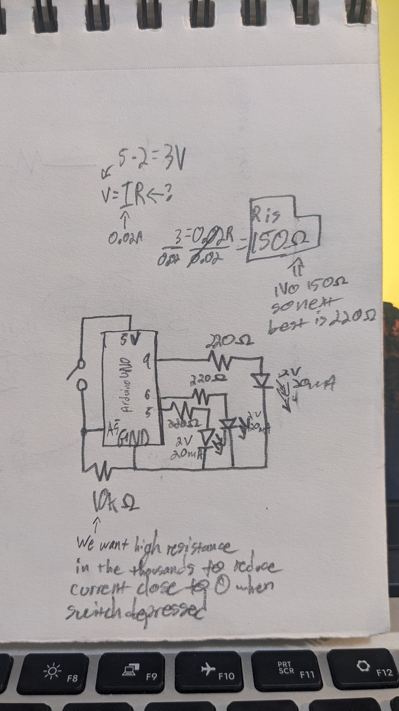
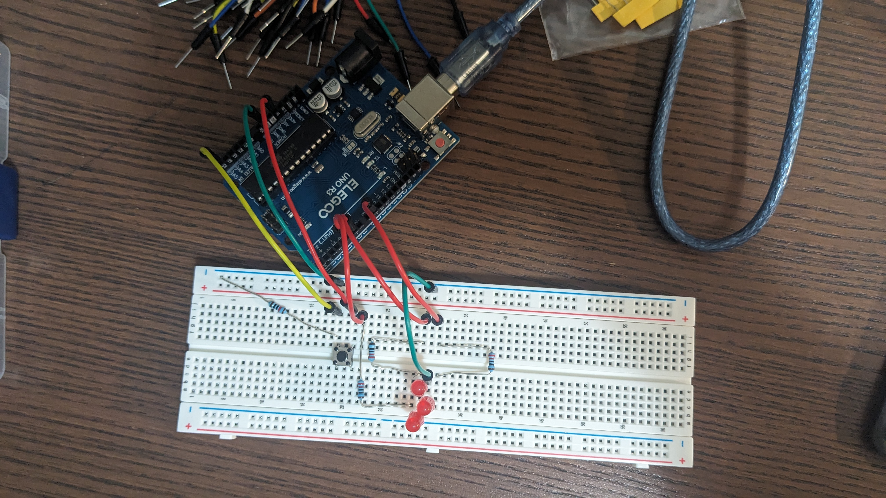
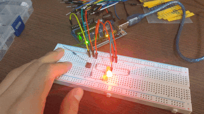
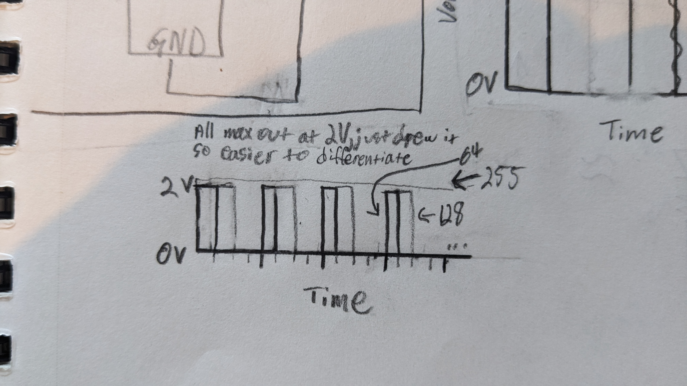

// ===== VARIABLE SETUP ===== //
// Defining the digital pins being used as constants to make potential future changes easier
const int ledPins[] = {5, 6, 9};
const int buttonReadPin = A5;
// Defining the time each LED takes to blink (blinkRate) and the granularity (lower value = smoother) of the fading (fadeStepsPerBlink)
const unsigned long blinkRate = 500;
const int fadeStepsPerBlink = 100; // Range of 2-510
const unsigned long fadeFrameRate = blinkRate / fadeStepsPerBlink;
// Translates fade steps
int fadeIncrement = 255 / (fadeStepsPerBlink / 2);
// Defining variables neccessary for the blink and fade timer logic
unsigned long prevMillis = 0;
unsigned long prevMillisFade = 0;
// LED index tracking needed for the futureproofing LED logic
int currLedIndex = 0;
int numLeds = sizeof(ledPins) / sizeof(ledPins[0]);
// Keeps track of the current brightness of the LED
int brightness = 0;
// ===== PIN SETUP ===== //
void setup() {
// Begin serial neccessary for analogRead
Serial.begin(9600);
// Configure button reading pin
pinMode(buttonReadPin, INPUT);
// Configure pins used for switching LEDs
for (int v : ledPins) {
pinMode(v, OUTPUT);
}
}
// ===== MAIN LOOP LOGIC ===== //
void loop() {
// ===== BUTTON LOGIC ===== //
// Freezes fading LEDs when button is pressed down
while (digitalRead(buttonReadPin) == HIGH) {
delay(50);
}
// Instantiate variable needed for the blink and fade timer logic
unsigned long currMillis = millis();
// ===== FADING LOGIC ===== //
// If the time that has passed is greater or equal to fade frame rate, adjust brightness by the fade increment
if (currMillis - prevMillisFade >= fadeFrameRate) {
prevMillisFade = currMillis;
// Calculates brightness value
brightness += fadeIncrement;
// Flip the direction of fading once reached the min or max accordingly
if (brightness <= 0 || brightness >= 255) {
fadeIncrement = -fadeIncrement;
}
// Sets the current LEDs' brightness
analogWrite(ledPins[currLedIndex], brightness);
}
// ===== BLINKING LOGIC ===== //
// If the time that has passed is greater or equal to the blink rate, switch to the next LED
if (currMillis - prevMillis >= blinkRate) {
// Updates blink timer logic
prevMillis = currMillis;
// Ensures current LED is faded completely off
analogWrite(ledPins[currLedIndex], 0);
// Advances index to control next LED
currLedIndex++;
// Reset the index once it's cycled through all LEDs
if (currLedIndex >= numLeds) {
currLedIndex = 0;
}
// Resets brightness and fade increment values
brightness = 0;
fadeIncrement = abs(fadeIncrement);
// Updates fade timer logic
prevMillisFade = currMillis;
}
}

